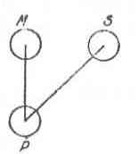

Kant: AA XVI, L §. 369--373. IX 125--128. §. 65--74. ... , Seite 724 |
|||||||
Zeile:
|
Text:
|
|
|
||||
| 01 | Neben dem Schlusssatz von L §. 372 und dem Anfang von L §. 373 | ||||||
| 02 | stehen folgende (auch wohl aus ι--φ stammende) Schemata: | ||||||
| 03 | PM | MP | |||||
| 04 | MS | SM | |||||
| 05 | SP | SP | |||||
| 06 |  | ||||||
3230. υ--ψ. L 103. Zu L §. 372 Schluss: |
|||||||
| 09 | Wenn wie hier maior negans ist, minor particulariter affirmans, so | ||||||
| 10 | lassen sich die praemissen umkehren. Ist er bejahend, so muß metathesis | ||||||
| 11 | praemissarum geschehen. | ||||||
3231. υ--ψ. L 103'. Zu L §. 372: |
|||||||
| 13 | In der 4. Figur heißt es: das praedicat haengt am medio termino, | ||||||
| 14 | der medius terminus hängt am Subiect, also das Subiect am Praedicat, | ||||||
| 15 | welches falsch ist; sondern es muß heissen: das praedicat am subiect | ||||||
| 16 | und diese proposition muß hernach umgekehrt werden. | ||||||
3232. υ--ψ. L 103'. Zu L §. 372: |
|||||||
| 18 | In der vierten Figur wird geschlossen: Das prädicat haengt am | ||||||
| [ Seite 723 ] [ Seite 725 ] [ Inhaltsverzeichnis ] |
|||||||
;){kind=link}